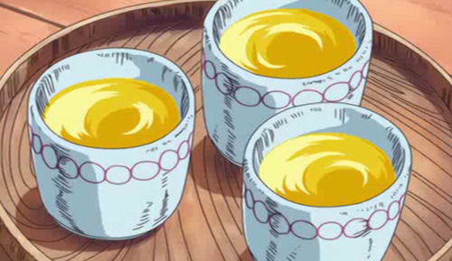

Gan Fall's Pumpkin Juice

Description
The leader of the winged race of Skypeia, Gan Fall has
ruled Skypeia since the time of the pirate king. Typically
a humble ruler, Gan Fall has a sweet tooth for the milky
pumpkin drink.
Ingredients
- 1/4 of a Pumpkin
- Water
- Honey
- Granulated Sugar
- Cow's Milk
Steps
- Remove the pumpkin seeds and skin, and cut the fruit
into thin cubes. Place fruit into a small pot, add
water and place the lid on the pot. Cook over a medium
flame. Turn off the flame once the pumpkin has turned
soft.
- Place the fruit in a blender, together with the Honey
and the sugar. Blend till smooth, cool in refrigerator.
- Pour the cooled juice into glasses, and add the amount
of milk you want. Stir and serve chilled. (Can also be
served hot.)